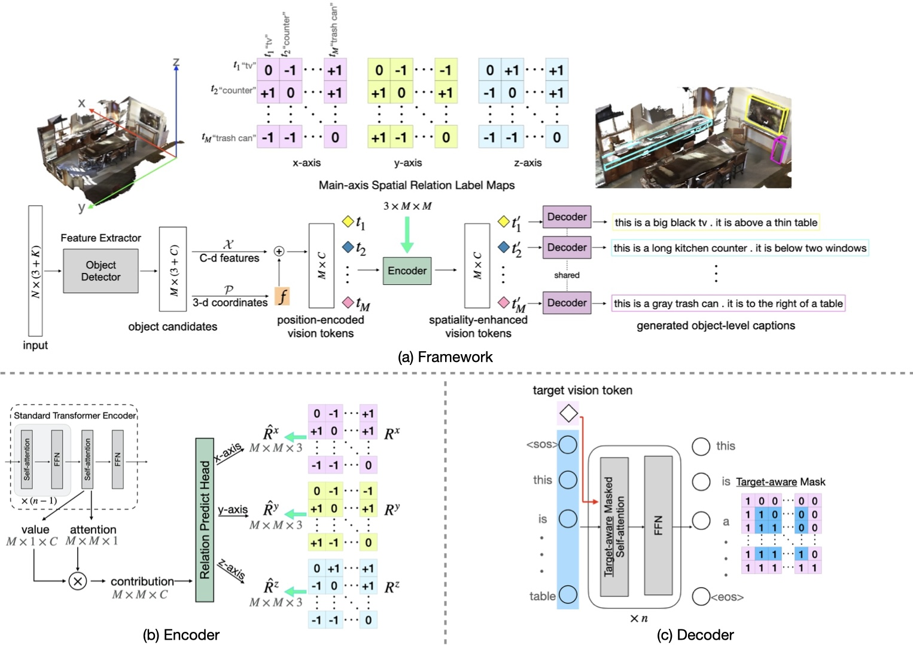
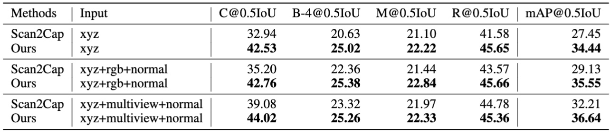
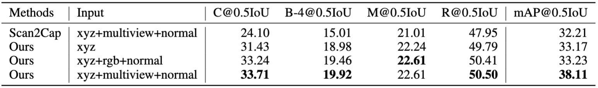

Spatiality-guided Transformer for 3D Dense Captioning on Point Clouds
- Heng Wang
- Chaoyi Zhang
- Jianhui Yu
- Weidong Cai
- University of Sydney


Overview
Dense captioning in 3D point clouds is an emerging vision-and-language task involving object-level 3D scene understanding. Apart from coarse semantic class prediction and bounding box regression as in traditional 3D object detection, 3D dense captioning aims at producing a further and finer instance-level label of natural language description on visual appearance and spatial relations for each scene object of interest. To detect and describe objects in a scene, following the spirit of neural machine translation, we propose a transformer-based encoder-decoder architecture, namely SpaCap3D, to transform objects into descriptions, where we especially investigate the relative spatiality of objects in 3D scenes and design a spatiality-guided encoder via a token-to-token spatial relation learning objective and an object-centric decoder for precise and spatiality-enhanced object caption generation. Evaluated on two benchmark datasets, ScanRefer and ReferIt3D, our proposed SpaCap3D outperforms the baseline method Scan2Cap by 4.94% and 9.61% in CIDEr@0.5IoU, respectively.
Video
(contains audio w/ subtitles)
To be released soon!Main Results
ScanRefer
Nr3D from ReferIt3D
BibTeX
If you find our project useful in your research, please kindly cite our paper via:
@inproceedings{SpaCap3D,
title={Spatiality-guided Transformer for 3{D} Dense Captioning on Point Clouds},
author={Wang, Heng and Zhang, Chaoyi and Yu, Jianhui and Cai, Weidong},
booktitle={Proceedings of the Thirty-First International Joint Conference on Artificial Intelligence, {IJCAI-22}},
year={2022}
}